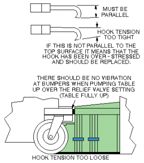

Illustration 2: DOCK HOOK TENSION ADJUST

Table 1: Dock Hook Mis-Adjustment Symptoms
| SYMPTOM | CAUSE | ACTION |
| Excessive force is required todepress dock pedal and fullyengage
dock latch. See Illustration 1. | Hook tension too tight | Loosen hook one turn and retest |
| NOTE: | Hook tension adjustment is very sensitive. Never adjust hook more than one turn at a time without retesting. Table should be undocked when making Hook Adjustments. Locknut must be tightened before attempting to dock. |
Illustration 1: DOCK HOOK TENSION CHECK

Illustration 2: DOCK HOOK TENSION ADJUST
| NOTE: | Do not adjust the dock hook tension more than one turn at a time. Adjusting more than one turn at a time may cause damage to internal Patient Transport mechanisms. |